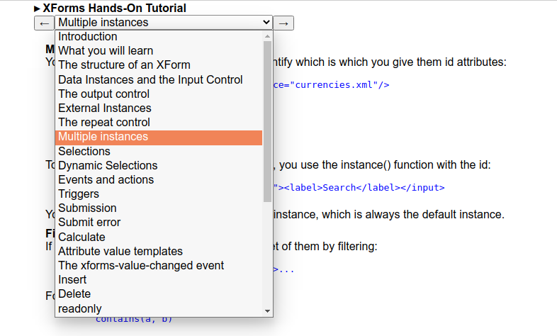
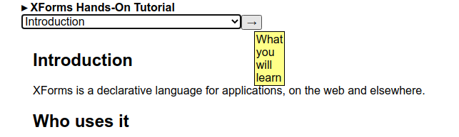

This document of chapters was then used as the basis of the navigation part of the tutorial. This was modelled on the navigation used in an earlier XForms application, the XForms 2.0 test suite [ts].
A navigation instance was created containing
a value base that defines where the chapter
files are stored,
a value for the filename of the chapter that is currently being read,
a value that constructs the required URL from the base and the filename:
<instance id="nav"> <nav xmlns=""> <base>chapters/</base> <file/> <url/> </nav> </instance> <bind ref="instance('nav')/url" calculate="concat(../base, ../file)"/>
To set the filename, a select1 control is
populated using the tutorial chapters instance: the labels are the
title of the chapter, and the value is the file name of that
chapter:
<select1 ref="instance('nav')/file"> <itemset ref="instance('tut')/entry"> <label ref="title"/> <value value="file"/> </itemset> </select1>
Either side of this control, are triggers that decrement and
increment this value (with judicious use of
preceding-sibling and
following-sibling):
<trigger
ref="instance('tut')/entry[file=instance('nav')/file]/preceding-sibling::entry[1]">
<label>←</label>
<hint><output ref="title"/></hint>
<setvalue ref="instance('nav')/file"
value="context()/file"
ev:event="DOMActivate"/>
</trigger>In this way, the user can select a chapter either from the drop down, or by navigating from chapter to chapter using the arrows.
Selecting a chapter
|  |
Note that thanks to how the ref on the trigger
works in XForms, in this case referencing the previous chapter, if
there is no previous chapter, the trigger will not be displayed.
The initial chapter, with no previous
|  |
To display the content of the chapter, an html iframe is used:
<html:iframe id="chapter" src="{instance('nav')/url}"></html:iframe>
Thanks to how XForms works, whenever the file
value gets changed, the url value automatically
gets updated, and so the new chapter is displayed.
The upshot of all this is that the tutorial instance doesn’t describe the structure of the tutorial but actually defines it. If a chapter needs to be moved, you just move it in the tutorial instance; if a new chapter is written, add it to the tutorial document. The navigation will consequently automatically be updated, and the chapter can be displayed.